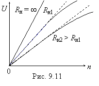

9.4.2. Тахогенераторы постоянного тока
Тахогенераторы постоянного тока (ТГПТ) изготавливают с постоянными магнитами на статоре или с электромагнитным возбуждением от независимого источника постоянного тока. В них используются якоря обычного типа, полые или дисковые с печатной обмоткой. При неизменном токе возбуждения Iв (при Фв = const) ЭДС тахогенератора пропорциональна частоте вращения вала n, т.е.
Ея = СEФяn = kn,
что является основой для использования микромашины постоянного тока в качестве тахогенератора.
Выходное напряжение ТГПТ U = Eя − RяI = Eя − RяU / Rн,
где Rя — сопротивление обмотки якоря; Rн — сопротивление нагрузки.
Откуда выходная характеристика
U =
Характеристики тахогенератора U =
f(n) при Фв = const и Rя = const являются практически линейными (рис. 9.11). Однако эти тахогенераторы можно применять только при неизменяемой нагрузке, т. е. совместно с индикатором или другим устройством, на который рассчитан данный тахогенератор.
Крутизна выходной характеристики ТГПТ колеблется в пределах от 3 до 1000 мВ/(об/мин) (меньшие значения относятся к ТГПТ с постоянными магнитами). Номинальные частоты вращения тахогенераторов постоянного тока составляют 1000...10000 об/мин, но наиболее распространены машины с частотой вращения n = 1500...3000 об/мин.